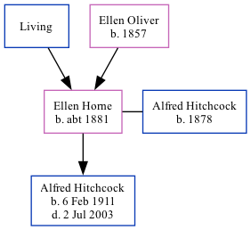

Ellen Hitchcock (née Horne) c1881 -
[ Home ] | [ Calendar ] | [ Surnames Index ] | [ Family History ]A bottle labeller and the child of James Horn (an engine fitter) and Ellen Oliver (a silk weaver), Ellen Horne, the second cousin twice-removed on the father's side of Nigel Horne, was born in Bethnal Green, London, England c. 18811,2,3,4 and married Alfred Hitchcock (a draper's warehouseman with whom she had 1 child, Alfred James) at St Peter's Church in Bethnal Green on Mar 28, 19105.
Throughout her life, Ellen lived in several places: at Gosette Street in Bethnal Green on Apr 3, 18811; at Gosset Street in Bethnal Green on Apr 5, 18912; at 32 Belgrave Street, Stepney, London, England on Mar 31, 19016; and at 50 Corfield Street in Bethnal Green on Apr 2, 19113.
Parents
- James John
- Ellen was born in 1857
Children
- Alfred James was born on Feb 6, 1911
Citations
- 1881 England, Wales & Scotland Census - Findmypast (was age 0 and the daughter of the head of the household)
- 1891 England, Wales & Scotland Census - Findmypast (was age 10 and the daughter of the head of the household)
- 1911 Census for England & Wales - Findmypast (was age 30 and the wife of the head of the household)
- England & Wales births 1837-2006 - Findmypast
- England & Wales Marriages 1837-2005 - Findmypast
- 1901 England, Wales & Scotland Census - Findmypast
Media
Ellen Horne - Alfred Hitchcock - Marriage

1891 England, Wales & Scotland Census Transcription - GBC-1891-0002293445
1881 England, Wales & Scotland Census Transcription - GBC-1881-0002069364
England & Wales marriages 1837-2005 - BMD/M/1910/1/AZ/000152/261
England & Wales births 1837-2006 - BMD/B/1880/4/AZ/000262/372
1901 England, Wales & Scotland Census - GBC/1901/0007341746
1911 Census for England & Wales - GBC/1911/RG14/01430/0115/2
Family Tree
Generated by Ged2Site. Last updated on Jul 20, 2025